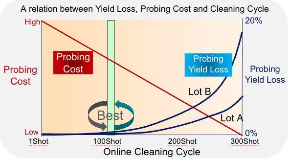
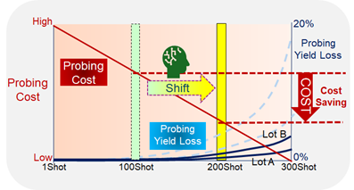
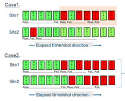
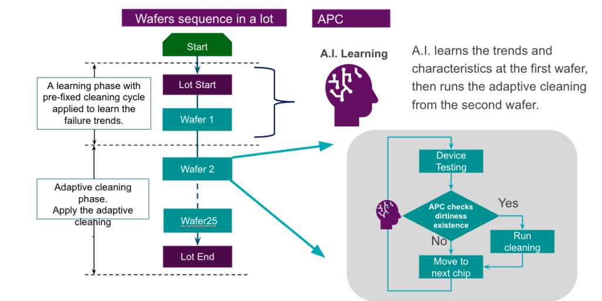

This article is adapted with permission from Electronics360. The original article can be viewed here.
By Nunzio Renzella, Specialist System Engineer, Advantest Europe GmbH
Test cost reduction is a key goal of semiconductor ATE customers, with major cost factors being test time, the test cell, and—for wafer-probing process—the probe card. Maintaining probe card cleanliness is a key aspect of a successful test process. Lack of cleanliness can result in good devices being rejected, but frequent probe card cleaning is time-consuming and increases the cost of test.
To optimize the cleaning interval, a new technique called adaptive probe card cleaning (APC) employs artificial intelligence (AI) and machine learning (ML) to provide real-time monitoring of probe card performance, initiating probe card cleaning only when necessary. The technique improves test efficiency and extends probe card life, resulting in cost savings and consistent performance while providing valuable insights that provide a competitive advantage.
Probe card cost breakdown
Probe card costs include the original purchase price. Probe cards are generally considered consumable products that need to be replaced, but during their useful life, they also incur online and offline maintenance costs. Online maintenance is performed inside the probe station, while offline maintenance requires the removal of the probe card for needle adjustment and replacement, tasks usually performed by the probe-card manufacturer.
In addition, probe cards incur costs related to the cleaning sheets required for the online cleaning process. One estimate puts the initial probe card purchase cost at 40% of the total probe card cost, with maintenance accounting for 55% of the total cost and cleaning sheets adding another 5%.
These figures point to maintenance cost as a key target for overall probe card cost reduction, and online maintenance costs are greatly influenced by the cleaning frequency. Currently, as illustrated in Figure 1, probe cleaning occurs on a fixed cleaning cycle based on a tradeoff between cleaning costs and yield loss. Complicating the estimation of the optimum cleaning cycle is the fact that yield loss varies from product to product and lot to lot. In the figure, for example, probing yield loss degrades much more quickly for lot B than for lot A. Taking into account cleaning costs and the wide range of yield losses, the customer in this example has estimated, based on practical experience and experimentation, that the “best” cleaning interval is at the 100-shot point.
Figure 1. Customers trade off cleaning costs (red trace) against yield losses (black traces) to determine the “best” cleaning interval (green bar).
Shifting the cleaning interval
In an effort to better optimize the timing of the cleaning cycle, Advantest has developed the software-based APC technique that applies AI algorithms to assess the condition of the probe needles in real time and to perform cleaning only when dirty needles begin affecting yield. In the Figure 2 example, APC enables probe cleaning to shift right to the 200-shot point, providing significant cost savings.
Figure 2. APC can allow cleaning to be shifted to the right (to the yellow bar), saving overall cleaning time and costs.
The APC AI algorithm functions by observing failure trends among different sites. If trends differ between two sites, the algorithm judges that one or more needles are dirty on the site exhibiting the most failures, and it sends a general-purpose interface bus (GPIB) command to the prober to initiate the online cleaning cycle.
Figure 3 provides more detail on how to determine if the needle tips are dirty. For case 1 on top, the failure balance has significantly broken down, with site 1 showing many more failures than site 2. Consequently, the APC algorithm judges that a cleaning is required for site 1. For case 2 on the bottom, the failure balance remains relatively constant, and APC judges that cleaning is unnecessary; the observed failures may result from a wafer production issue.
Figure 3. For case 1, the failure rate is out of balance, indicating a need for cleaning, while the relative balance of case 2 indicates that cleaning is not necessary.
A potential issue with APC arises when a continuous failure at a specific site results in APC triggering too many cleaning actions. To prevent this situation, APC can observe whether a cleaning has resolved an issue. If not, it concludes that the issue has a root cause other than a dirty needle, and it activates an Auto Bin Disabling function, which disables monitoring of the problematic site and bin. The customer can choose whether or not to use this function.
APC flow
The APC implementation flow (Figure 4) begins with a learning phase with a pre-fixed cleaning cycle (equal to the cycle used by the customer in the conventional probing approach) for the first wafer in a lot. The APC AI algorithm employs ML to determine the pass/fail tendency of each site. If the ML from the first wafer is successful, the adaptive-cleaning phase begins with the second wafer and continues with subsequent wafers, with cleaning performed whenever contamination is detected. If the ML is not successful on the first wafer due to low yield, the learning phase continues with the second wafer.
Figure 4. An AI algorithm employs ML on the first wafer and applies APC to other wafers in a lot.
Tester and prober independent
APC is adaptable and flexible. It works with Advantest’s T2000, V93000, and T6000 SoC test systems, as well as with other companies’ ATE systems. It also works with a variety of probers, including those from Accretech, SEMICS, and TEL, and with a variety of cantilever, vertical, and other probe-card types. APC supports parallel counts from two to 256 sites.
In addition, the APC algorithm executes in less than 1 ms per shot and will have a negligible impact on test throughput. Customers do not need to modify their test programs, and APC can run on the tester controller, so they do not need to add any specific hardware. Also, APC does not require access to Standard Test Data Format (STDF) data or any specific parametric data. Customers can use a standard prober driver, but they will need to add a GPIB command for initiating the cleaning process, and they will need to modify the prober recipe by adjusting the prober parameter setting.
Figure 5 summarizes the differences between the traditional fixed cleaning cycle (top) and the APC cycle (bottom), with the horizontal axis showing the elapsed time. As shown for the fixed cleaning cycle, a probe can become contaminated well before the 100-shot fixed cleaning interval, potentially resulting in many good devices being rejected (during the times indicated by the solid red arrows).
Figure 5. Fixed-cycle cleaning (top) can result in the rejection of good parts, while APC (bottom) can save these devices.
However, APC can detect contamination in real time, minimizing yield loss due to dirty needles and saving devices tested during the time indicated by the outlined red arrows.
APC results
APC has yielded favorable production line results. Based on one year of data, one customer reported that on one fab testing 37,000 wafers, it saw a 75% average cleaning reduction, and on another fab testing 10,000 wafers, it found a 50% to 80% reduction, both while maintaining the same yields. The same customer reported that probe card lifetimes were extended by 35% to 100%.
A second customer, using four different vertical probe card types, reported an online cleaning reduction of 65%, a yield improvement of 0.6%, and a lot test-time reduction of 7.4%. This customer also found that probe card life doubled and probe card maintenance costs were reduced by 50% per year.
To illustrate how APC can help prospective customers, Advantest offers an APC offline simulation capability. These customers can send Advantest STDF files for several wafer lots as well as information on the current probe-cleaning interval setting. Advantest will return an APC simulation report stating the achievable cleaning reduction ratio and including HBIN sequencing maps showing when and where the cleaning occurred.
Conclusion
Several factors can lead to probe tips becoming dirty, but many are unpredictable, and test managers must expect that the probe tips can become dirty at any time. APC can determine when this condition occurs, and it can take the appropriate cleaning action at the appropriate time.
APC offers several specific benefits. It prolongs the life of probe needles, reduces probe-card maintenance costs, reduces yield loss, and shortens lot inspection times. In addition, customers need not manually adjust the cleaning cycle in response to new observations, and the optional Auto Bin Disabling function can automatically avoid continuous failures. Finally, APC reduces test time by eliminating extraneous probe-card cleaning and realignment after cleaning.


